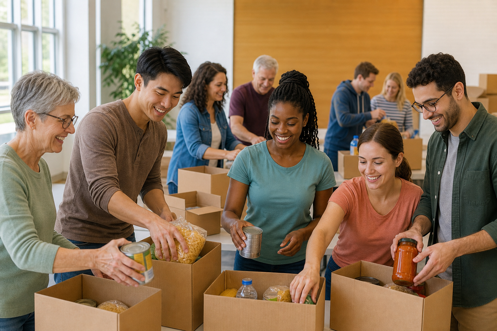

Maraude nocturne
120 repas chauds / semaine (exemple) — fourgons réfrigérés démo.
Coût : 4,20 € / repas (fictif)

Maraude, jeunesse, insertion — montants et bénévoles fictifs. Photos générées pour démo.
Chiffres et bénéficiaires inventés pour la mise en page.
120 repas chauds / semaine (exemple) — fourgons réfrigérés démo.
Coût : 4,20 € / repas (fictif)
18 collégiens suivis — 2 séances hebdo — matériel fourni.
Adhésion famille : 12 €/an (démo)
Ateliers CV + simulations d’entretiens — 6 mois par parcours.
Financement : partenaires imaginaires
15 €
Colis hygiène (démo)
40 €
10 repas fictifs
150 €
Matériel scolaire trimestre
Aucun paiement n’est traité sur ce site.
« Équipe soudée, briefings clairs avant chaque tournée. Horaires respectés sur la maquette. »
« Mon fils a repris confiance en maths grâce aux séances du mercredi — histoire fictive. »
Deux réunions plénières / trimestre (exemple), charte signée jour 1 — coordonnées inventées : benevoles@main-tendue-57-demo.local
Image large + texte pour remplir les grands moniteurs : chaîne de plonge, rotation des bénévoles, stocks de conserves imaginaires.

Arrivée des camions à 17h30, déchargement sous tente, pesée des cartons, étiquetage couleur, répartition nord/sud/est, sacs isothermes numérotés, checklist signée, photo de groupe floutée volontairement, compte-rendu envoyé à une mailing-list inexistante, remerciements lus à voix haute, rangement des chaises, extinction des lumières, clé remise au gardien imaginaire.
Nous continuons : charte anti-discrimination affichée, formation obligatoire « accueil dignité » de 90 minutes, badge bénévole orange, gants nitrile bleus, masques si stock disponible, gel hydroalcoolique parfum citron démo, balance de cuisine pour portions, menus végétariens deux fois par mois, desserts donnés par pâtisserie partenaire fictive, jus de fruits dilués, eau plate en carafe, gobelets compostables empilés près de l’évier.